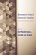

|

|
Conceiving Masculinity
Male Infertility, Medicine, and Identity
Barnes, Liberty Walther
British Sociological Association's Foundation for the Sociology of Health and Illness Book Prize, 2015
|

|
Softly, with Feeling
Joe Wilder and the Breaking of Barriers in American Music
Berger, Edward
Association for Recorded Sound Collections' Award for Excellence in the category of Best Historical Research in Recorded Jazz, 2015
|

|
Disability and Passing
Blurring the Lines of Identity
edited by Brune, Jeffrey A. and Daniel J. Wilson
Contributor Dea H. Bolster, won the Disability History Association Award for Best Book Chapter, 2015 |

|
Mobilizing Gay Singapore
Rights and Resistance in an Authoritarian State
Chua, Lynette J.
Distinguished Book Award from the Sociology of Law Section of the American Sociological Association, 2015
Awarded a certificate from the International Convention of Asia Scholar's Book Prize acknowledging it as Ground-Breaking Matter in the Social Sciences category by the 2015 Reading Committee, 2015
|
|
Out in the Union
A Labor History of Queer America
Frank, Miriam
Outstanding Academic Title, Choice, 2015 |

|
Reverse Engineering Social Media
Software, Culture, and Political Economy in New Media Capitalism
Gehl, Robert W.
Nancy Baym Book Award, 2015
|

|
Making a Global Immigrant Neighborhood
Brooklyn's Sunset Park
Hum, Tarry
Honorable Mention from the Association of Collegiate Schools of Planning's Paul Davidoff Award, 2015
|

|
Movements in Times of Democratic Transition
edited by Klandermans, Bert and Cornelis van Stralen
Outstanding Academic Title, Choice, 2015 |

|
Dominican Baseball
New Pride, Old Prejudice
Klein, Alan
Outstanding Book Award from the North American Society for the Sociology of Sport, 2015 |

|
Financialization of Daily Life
Martin, Randy
Randy Martin is the recipient of the American Sociological Association's Marxist Sociology Lifetime Achievement Award, 2015 |

|
Knowledge LTD
Toward a Social Logic of the Derivative
Martin, Randy
Randy Martin is the recipient of the American Sociological Association's Marxist Sociology Lifetime Achievement Award, 2015 |

|
Under New Management
Universities, Administrative Labor, and the Professional Turn
Martin, Randy
Randy Martin is the recipient of the American Sociological Association's Marxist Sociology Lifetime Achievement Award, 2015 |

|
Chilean New Song
The Political Power of Music, 1960s-1973
McSherry, J. Patrice
Cecil B. Currey Book Award, 2015
|

|
Accessible Citizenships
Disability, Nation, and the Cultural Politics of Greater Mexico
Minich, Julie Avril
MLA Prize in United States Latina and Latino and Chicana and Chicano Literary Cultural Studies, 2015
|

|
Blue Juice
Euthanasia in Veterinary Medicine
Morris, Patricia
Midwest Sociological Society Distinguished Book Award, 2015
|
|